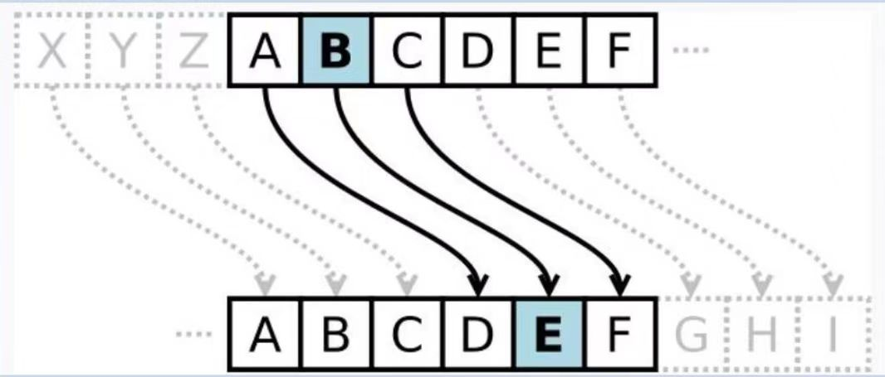

凯撒密码的原理
将明文中的每个字母，按照字母表顺序向后（或向前）移动固定数量的位次，从而生成密文。例如，若位移量为3，则字母A变为D，B变为E，以此类推；解密时，只需将密文字母反向移动相同位次即可还原明文。
假设我们选择位移量 k = 3，对明文 "HELLO WORLD" 进行加密：
- 明文：H E L L O W O R L D
- 加密过程：
H → K，E → H，L → O，O → R，W → Z，依此类推
- 密文：KHOOR ZRUOG
解密时，只需将密文字母向前移动3位，即可恢复原始信息。
凯撒密码的破解与局限
尽管凯撒密码在古代被视为高效加密手段，但其脆弱性在现代密码学中显而易见：
- 密钥空间极小：仅25种可能位移（排除k = 0的情况），通过暴力破解（尝试所有位移量）即可轻松解密。
- 语言特征暴露：加密后的密文仍保留原始语言的字母频率和单词结构，例如英语中常见的字母“E”和“T”在密文中依然可能高频出现。
凯撒密码的文化与教育价值
尽管凯撒密码在现代已被更复杂的加密算法取代，但其历史意义与教育价值不可忽视：
- 密码学启蒙：作为替代密码的典型代表，凯撒密码为理解现代密码学奠定了基础。
- 跨学科应用：在数学、计算机科学、语言学等领域，凯撒密码常被用作教学案例，帮助学生掌握编码、解码和统计分析技能。
- 文化符号：在文学、电影和游戏中，凯撒密码常被赋予神秘色彩，成为解谜和冒险故事的重要元素。